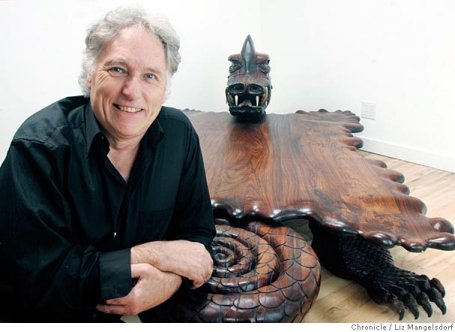

It was on a balmy summer afternoon on a beach near Bolinas when Tom D'Onofrio witnessed his first sea serpent.
The date was Aug. 30, 1976. It was the kind of day when the ocean was more like a lake and a person could spot just about anything swimming through the breakers close to shore, he recalled. D'Onofrio and a friend were talking about a table D'Onofrio had been working on for more than a year -- he was having difficulty finishing it.
He had promised his clients a dragon's head, but he could not picture what the head of the creature would look like.
A master woodcarver who would later found the Baulines Crafts Guild, D'Onofrio was then at the beginning of his artistic career. As a former Methodist minister, he had been praying for a solution to the table that was supposed to feature a mythical creature.
"I had the feet and the tabletop done, but I couldn't get the detail of the head," D'Onofrio said. "I had worked on it for two days before and was not getting it. My hands were shaking. I went to carve it, but I knew that if I screwed it up again that it would be ruined."
D'Onofrio said he was feeling emotionally, physically and spiritually drained. A spur-of-the-moment ride to RCA Beach on the back of his Appaloosa, White Cloud, had brought him to a tent where his friend had set up a day camp and teepee on the beach. As D'Onofrio commiserated with his friend, he spotted something from the corner of his eye.
"Suddenly there was this dark figure swimming though the surf," he said. "It was this big and dark creature -- about 40 feet long. We watched and this thing came up and out of the water."
What he spotted, he says, was a sea serpent. It wasn't seaweed, or an eel or a shadow.
The creature was so big that it pushed the ocean back as it broke through the waves, D'Onofrio said. It had a head like a dragon.
D'Onofrio and his friend looked at each other in amazement. A moment later the serpent reared its head again, this time clear enough for both men to see.
D'Onofrio worked for four days straight, finishing the head of the table that he had been making for Paul Kantner and Grace Slick of the Jefferson Airplane, who were living in Bolinas at the time. Later in the year, D'Onofrio and the Rose Dragon Table were featured in National Geographic magazine. D'Onofrio posed on a reef near where he spotted the inspirational sea creature.
D'Onofrio said that for him, the sighting was sort of a spiritual catalyst for other events that helped to shape his life and work in Bolinas. It led him to found the Baulines Crafts Guild, as well as to carving a Bear and Bull sculpture for a Bay Area financier. When brought to the floor of the Pacific Stock Exchange on seven occasions, stock prices went through the ceiling.
Coincidence? Perhaps.
The sighting also gave him the ability to work full time as an artist, community leader and self-described nonsectarian minister to the people in Bolinas, performing dozens of weddings and other rituals over 40 years.
Sitting on a chair in the tiny wood cabin that he built in a remote corner of the Bolinas Mesa, D'Onofrio is surrounded by images of dragons, dolphins, bulls and bears and other artistic renderings that he has masterfully created out of wood. A larger than life eagle mask used in the town's yearly Floating Sun Festival and Blessing of the Babies, an annual community ritual that he helped found, hangs from a wall near his bed. Across the room are framed photos of D'Onofrio, 63, in his 20s with shoulder-length hair atop his majestic Appaloosa, galloping across the beach.
Of more personal significance, perhaps, are several traditional acrylic paintings in the kitchen that feature scenes from the lakes and mountains around Saranac Lake, in upstate New York where he grew up, that were painted by his grandmother. This is where his journey began, he said.
Growing up in the tiny village of Saranac Lake in the heart of the Adirondack Mountains, D'Onofrio said that his grandmother's paintings were the first things he saw every morning.
Attracted to a painting of a log cabin on the side of a lake, the young D'Onofrio decided that one day he would build his own. By age 13, the dream had come true with the help of adults in his community who let him work off the cost of lumber by mowing lawns. By 14, he had built an even better cabin. At 17, he had purchased a small parcel of land and had his sights set on building one more cabin.
A problem arose when someone complained that one of D'Onofrio's cabins was on state property and would have to be torn down. But then the chief of police offered something unexpected: He and others would help D'Onofrio build a cabin on a different part of the lake. He would buy the lumber using the money -- more than $500 by this time -- D'Onofrio had saved from doing odd jobs. The kicker was that the cabin would be a kind of clubhouse for D'Onofrio and the men in the community.
"The next day this monstrous load of wood arrived on the beach," D'Onofrio recalled. "I pulled out all the nails and straightened out the boards. I'll never forget seeing a flotilla of boats coming across with men who were coming to build. I look back and I can remember seeing a light on in the cabin and smoke coming from the chimney. I look there and I see that cabin and I think of my grandmother.
"It was an amazing thing that they did for me, helping me do my own thing and build my own cabin," D'Onofrio said.
D'Onofrio went on to study theology, organizing ministries in logging camps and other remote locations and working with at-risk youth at the Fred Finch Youth Center. He worked with alcoholics in rehab centers, and served as a minister at Napa State Hospital.
Living in Berkeley while attending the Graduate Theological Seminary, D'Onofrio was at ground zero for the anti-war movement.
After being inspired by the words of the late Mario Savio at an anti-war rally on Cal's Sproul Plaza, D'Onofrio said he felt a shift in his priorities. He began organizing ministries for peace and participating in anti-war rallies.
"We wanted to help minimize the violence," D'Onofrio said. "Of course, who got beat up? We did."
D'Onofrio had married a woman from his hometown, and they had a son, Phillip. The anti-war activities put a strain on the marriage, and in 1967 the couple broke up and his wife and son returned to the East Coast.
"She was always a little more straight-laced and conservative then me," D'Onofrio said.
Having visited Bolinas over the course of several years, D'Onofrio felt drawn to the community.
"I came out one day, and when I was driving back to Berkeley thought, 'Why am I leaving?' "
He had met Art Espenet Carpenter, a self-taught furniture craftsman whose handmade furniture and spiral staircases had been featured at museums and, later, at the Smithsonian Institution, and thought to himself that he would like to craft furniture.
With a background in construction he was able to land a job building houses during a small housing boom of the era, renting a house on the Bolinas Mesa for $85 a month. After a worker at Carpenter's studio quit in August 1969, D'Onofrio was able to work with Carpenter, sanding wood for furniture, earning $2.25 an hour.
"Working with Art, I kept seeing him in a particular role: teacher. I thought it would be a great thing -- like the older men on my paper route who taught me how to build a house, and later how to be a minister. I told him this and he brushed it off. He said, 'No one would want to come all the way out here and learn from me.' "
A friend had introduced him to Kantner and Slick, who had moved to an oceanfront house at the end of Brighton Avenue in 1970. After meeting with the pair, D'Onofrio offered to make them a table, initially conceived to be a dining table with four dragons looking up from it. The only stipulation was that Kantner wanted the table to be made of rosewood. The couple gave him $700 in cash and told him to start work.
When he left their home, D'Onofrio said he had an epiphany.
"I was not in Berkeley and I was not in the ministry. I was working at a job that I loved and was staying up late doing it," he said. "I had the best surfers in town working for me, girls and more. I thought to myself, 'If I can do this, why can't others do it?' Why can't others be as happy as I am at my work?" D'Onofrio felt that if there were a community of people doing what they loved that the world would be a better place.
He came up with the idea of starting an apprenticeship program -- one not unlike what had happened by accident in his early life when the elders of his community made him buy his own supplies and showed him how to make a cabin.
The idea, which soon became the Baulines Crafts Guild, involved local craftspeople taking on one person, who would pay them for imparting their skills. What each craftsperson charged would be up to them. D'Onofrio promised to take care of housing for the apprentices, insurance and to handle disputes. Guild members were to pay $15-a-month ledger dues. D'Onofrio agreed to not take a salary until the group was able to get grants or other income by achieving nonprofit status.
The guild consisted of carpenters, wood craftsmen, furniture makers, macrame artists, leather workers, photographers, filmmakers and more. Even Art Carpenter signed on as a mentor, usually working with an apprentice for three- month periods.
"He basically said, 'You work on my pieces in the mornings and I'll work on your pieces in the afternoon,' " D'Onofrio said.
It was a year before he contacted Kantner and Slick and invited them to come and see the finished table top and legs.
"They were like, 'Oh my God, it's beautiful. It's stunningly beautiful.' "
The couple confessed that when they hadn't heard back from him they assumed the worst and had bought a dining room table. A decision was made to turn the dining table into more of a coffee table, and with only the one dragon head. Kantner wrote D'Onofrio a check for $1,500 and told him to finish the work.
When the table was finally finished in 1976, D'Onofrio was able to pay off the bank loan on his land and own his property free and clear.
From its inception in 1972 through September 1976, the Baulines Crafts Guild took on more than 300 apprentices. "These were definitely the Golden Years," D'Onofrio said.
These days, the guild is based in San Rafael, and D'Onofrio is active only as a member. His eldest child, Phillip, 37, followed in his dad's peace activist footsteps and lives in Salem, Ore. Two school-age children, Ciarra, 11, and Colby, 8, keep their dad on his toes at soccer matches and other Bolinas School events.
D'Onofrio is reflective on being in his 60s and on following his passions in Bolinas.
"I feel so lucky to have had these opportunities and to have been involved in the intimate lives of so many wonderful people and to have these most unusual stories emerge," he said.
"I have seen that when people follow their passion, their lives become more personally meaningful and if you have a collection of people with these feelings then the community begins to be transformed, and hopefully that community becomes a tuning fork that vibrates into the wider national culture."